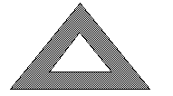
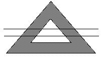
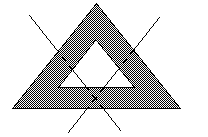

Most of the time, we have an intuitive feel for whether a problem is hard or easy. But on tricky problems (problems that appear easy but are actually hard) our intuition can fail us.
On the test, your first question will be of medium difficulty. If you answer it correctly, the next question will be a little harder. If you again answer it correctly, the next question will be harder still, and so on. If your math skills are strong and you are not making any mistakes, you should reach the medium-hard or hard problems by about the fifth problem. Although this is not very precise, it can be quite helpful. Once you have passed the fifth question, you should be alert to subtleties in any seemingly simple problems.
There are special techniques and strategies that apply to the hard problems only. Do not apply the methods of this section to the easy or medium quantitative comparison problems.
On Hard Quantitative Comparison Problems, The Obvious Answer (The Eye-Catcher) Will Almost Always Be Wrong. (If one expression looks at first glance to be larger than another, then it will not be.)
This is so because when people cannot solve a problem, they most often pick the answer-choice that "looks right." But if that were the answer, most people would answer it correctly and therefore it would not be a "hard" problem.
Example:
x ≥ 1
Column A
x10
Column B
x100
Example:
Column A
The number of distinct prime factors of x
Column B
The number of distinct prime factors of 4x
Example:
Column A
The area of a square with perimeter 12
Column B
The area of a parallelogram with perimeter 16
Note 1: When plugging in on quantitative comparison problems, be sure to check 0, 1, 2, –2, and 1/2, in that order.
Note 2: If there are only numbers in a quantitative comparison problem, i.e., no variables, then (D), not-enough-information, cannot be the answer.
Note 3: When drawing geometric figures, don’t forget extreme cases.
Eliminate Answer-Choices That Are Too Easily Derived or Too Ordinary.
Example:
x × y = 3
Column A
x + y
Column B
4
whose sum is not 4. In fact, there are an infinite number of
pairs. For example, 9 ×
= 3
, but 9 +
1
3
≠ 4
. This is a double case and therefore
the answer is (D).
1
3
Example:

Column A
The greatest number of regions into which two straight lines will divide the shaded region.
Column B
4

In each case, four separate shaded regions are formed. But these drawings are too ordinary, too easy. There must be a way to draw the lines to form more than four regions. Try to draw it before looking at the answer below.

The lines must intersect in the
shaded region.